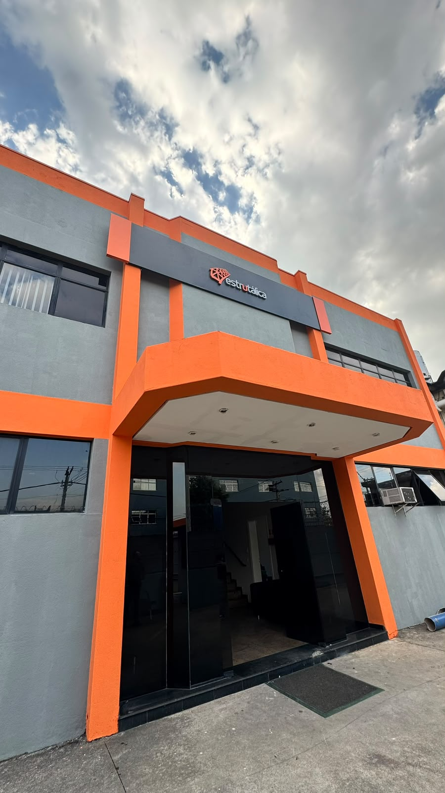
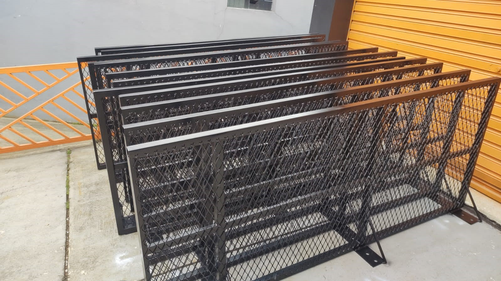
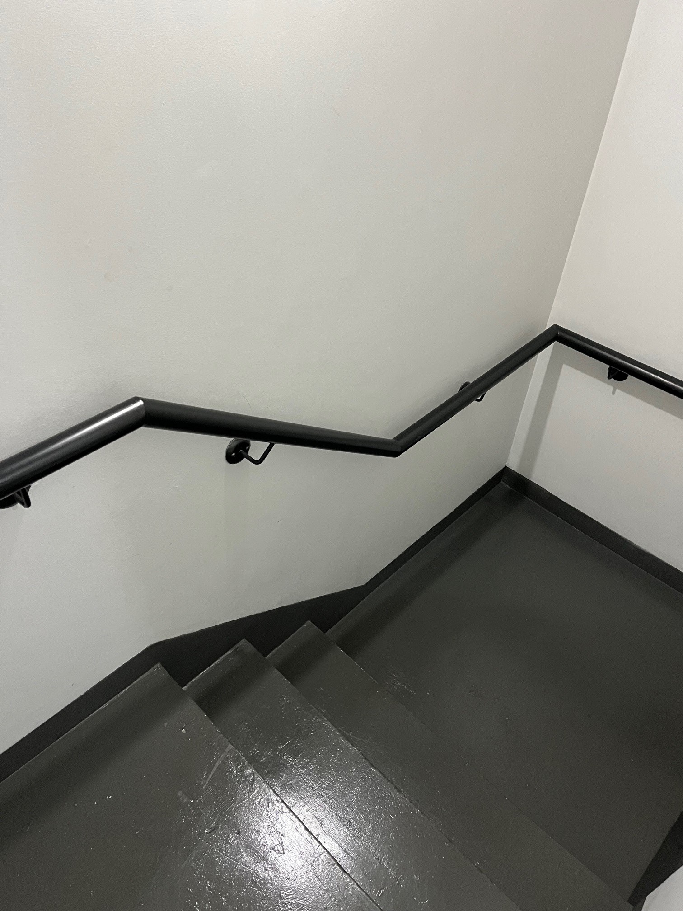
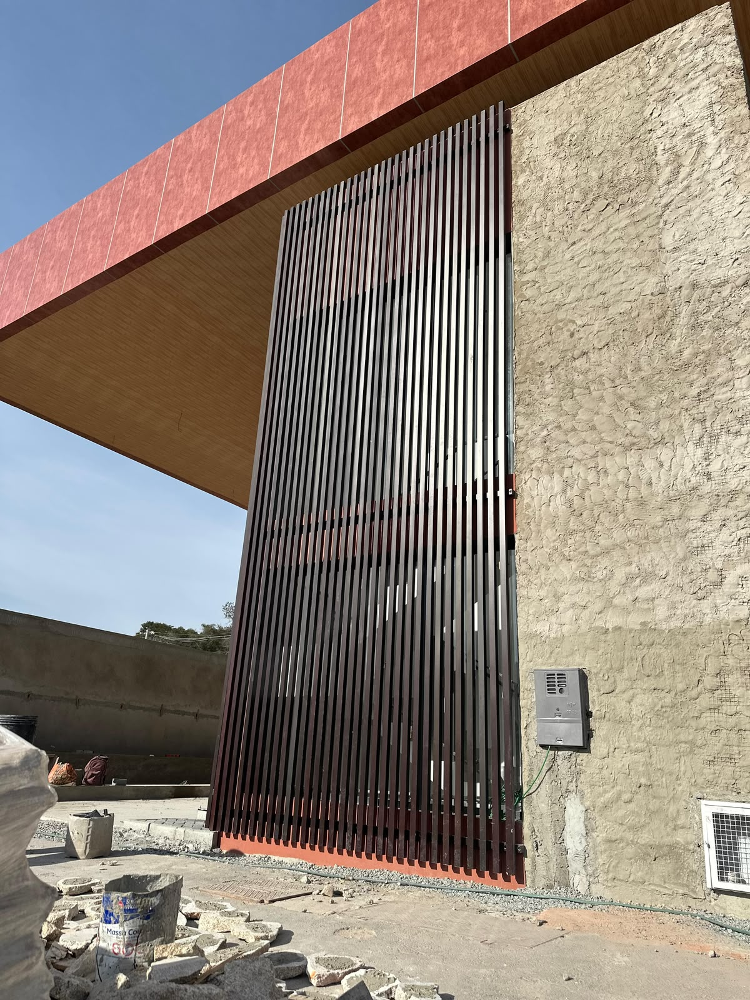
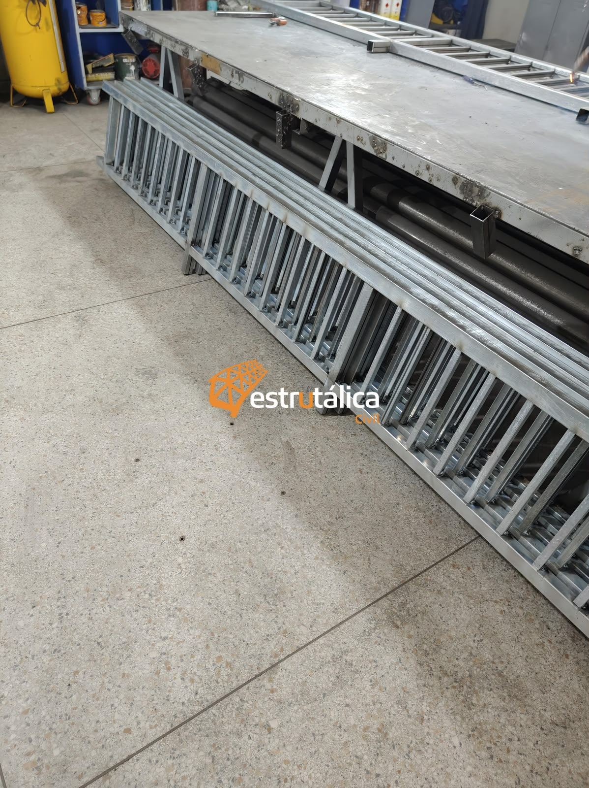
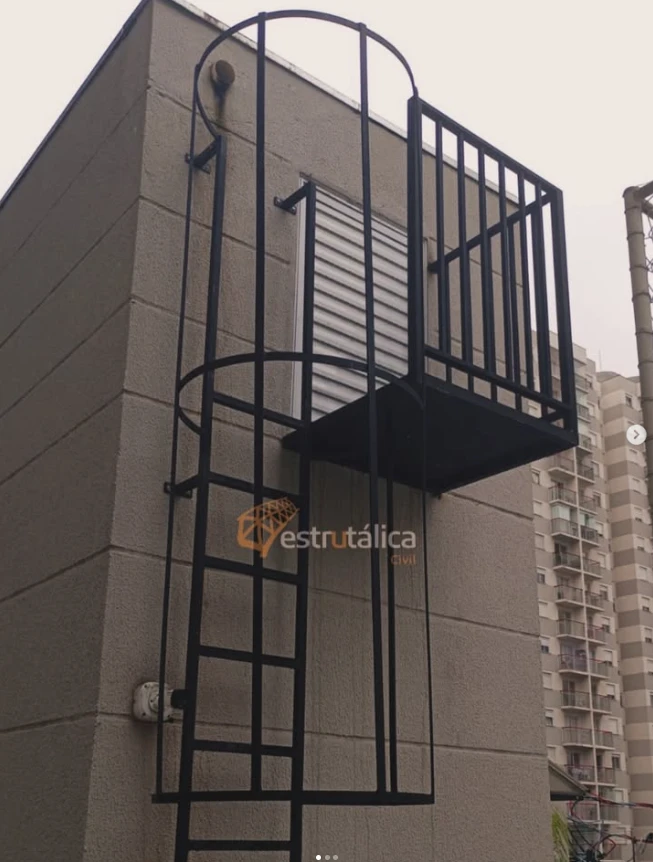
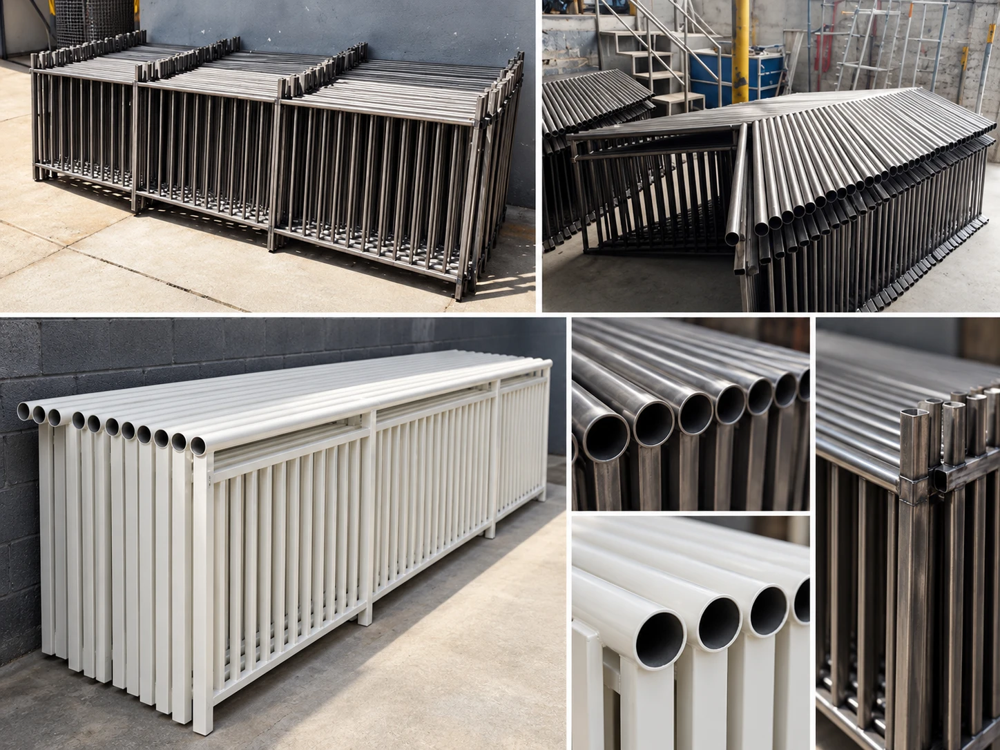
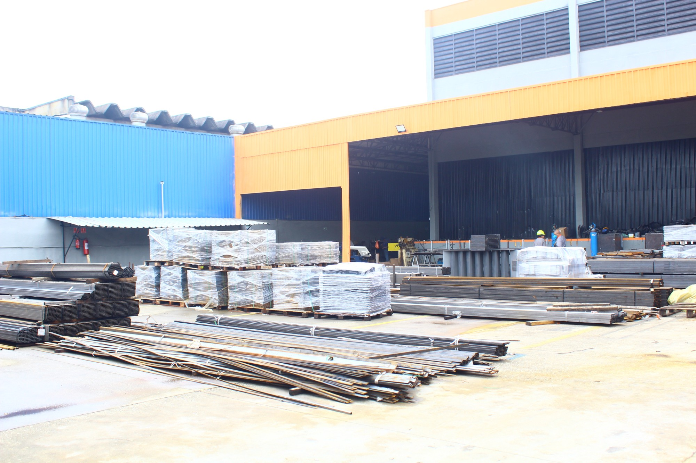
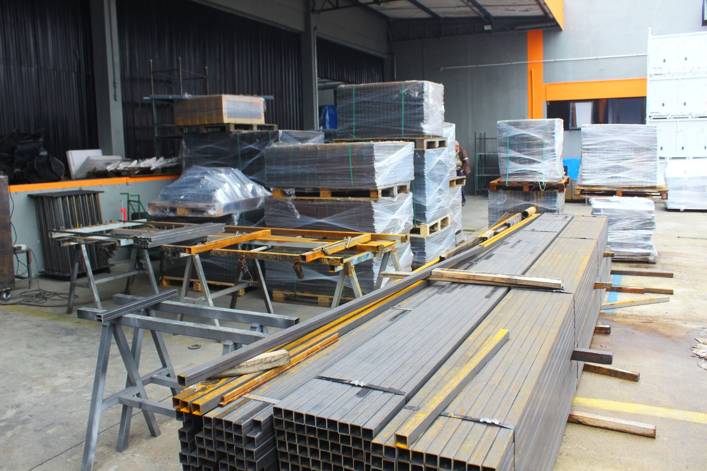

Guarda-corpo e corrimão
Soluções que atendem às normas técnicas e valorizam o seu projeto.
- Trabalhamos conforme a NBR e normas técnicas
- Design moderno e sob medida
- Acabamento diferenciado
ESTRUTURAS METÁLICAS SOB MEDIDA
Soluções em estruturas metálicas para projetos residenciais, comerciais e corporativos.
A Estrutálica Civil une engenharia, capacidade produtiva e uma equipe preparada para fabricar e instalar soluções sob medida para obras de maior porte.
Preencha os dados abaixo. Nossa equipe entrará em contato para entender sua necessidade.

NOSSA HISTÓRIA
Fabricamos e instalamos estruturas metálicas sob medida: guarda-corpos, corrimãos, escadas metálicas, pergolados e coberturas, portões, fechamentos e estruturas especiais.
Estamos em Guarulhos, a apenas 200 metros da Rodovia Presidente Dutra, o que agiliza a entrega e a instalação em todo o estado de São Paulo. Nossa equipe é qualificada e experiente, e reinvestimos continuamente em tecnologia para aprimorar nosso processo produtivo.
Qualidade e Produtividade.
Solicitar orçamentoNOSSOS PRODUTOS
Nossa equipe avalia o cenário, envolve a engenharia necessária e trabalha para encontrar uma solução que faça sentido para o seu negócio.
Soluções que atendem às normas técnicas e valorizam o seu projeto.
Ambientes que inspiram.
Esse é o tipo de estrutura metálica que transforma áreas externas em espaços únicos, com beleza, conforto e durabilidade.
Segurança em todos os níveis.
Projetos sob medida que aliam resistência, funcionalidade e design moderno para ambientes residenciais, comerciais e industriais.
Proteção e valorização do seu espaço.
Soluções metálicas mais robustas e personalizadas de acordo com cada projeto. Realizamos para residências, condomínios, comércios e indústrias.
Quando o projeto foge do padrão.
Estruturas soldadas e pintadas desenvolvidas a partir do desenho ou da necessidade do cliente, com acompanhamento de engenharia do início ao fim.
Gostou do que viu? Peça o orçamento do seu projeto.
Solicitar orçamentoNA PRÁTICA
Registros de fabricação e soluções do portfólio da Estrutálica. O cuidado aparece em cada detalhe.








O QUE DIZEM NOSSOS CLIENTES
“Já trabalhei com outros fornecedores e posso dizer que aqui o padrão é diferenciado. Excelentes profissionais, produto bem feito, sem dor de cabeça e o principal, entrega no prazo!!”
“A Estrutálica é uma empresa maravilhosa! Entrega no prazo, qualidade dos serviços excelentes, equipe profissional e qualificada, perfeita. Super recomendo”
“Atendimento e material de qualidade.”
Avaliações reais de clientes, publicadas no Google.
Ver todas no GoogleCAPACIDADE PARA ENTREGAR
Demandas de maior porte exigem organização, capacidade produtiva e gente preparada.
Espaço e estrutura produtiva preparados para receber demandas maiores e produções em escala.
Acompanhamento técnico para transformar necessidades em soluções executáveis.
Profissionais experientes na fabricação e instalação das soluções.
Uma equipe preparada para entender imprevistos, tratar desafios e buscar a solução.
DIFERENCIAIS
Trabalhamos com solda MIG, que garante fixação firme e acabamento limpo nas estruturas.
A pintura eletrostática garante um acabamento mais uniforme, alta resistência e proteção contra intempéries, mantendo a estética e a qualidade do material por muito mais tempo.
COMO FUNCIONA
Na Estrutálica Civil você encontra compromisso, qualidade, segurança e parceria.
Entre em contato com a nossa equipe e nos envie a sua necessidade.
Vamos entender a sua demanda e desenvolver o projeto de acordo com as normas técnicas.
Após a aprovação, fabricamos os produtos com qualidade.
Finalizamos com pintura e acabamento de alto padrão.
Realizamos a entrega e a instalação do projeto.
Seguimos ao seu lado depois da instalação.
Para começar, tenha em mãos fotos, medidas ou desenhos do projeto.
Apresentar meu projetoPERGUNTAS FREQUENTES
Porque nossa estrutura foi pensada para atender demandas maiores. Temos aproximadamente 3.000 m² de área produtiva, acompanhamento de engenharia, equipe de fabricação e instalação e capacidade para desenvolver soluções sob medida. Aqui, o cliente encontra estrutura para produzir e equipe para acompanhar a obra.
Sim. Esse é justamente um dos nossos principais focos. Atendemos empresas, indústrias, incorporadoras, condomínios e projetos corporativos que precisam de capacidade produtiva, planejamento e acompanhamento durante a execução.
Sim. Inclusive, muitos clientes chegam até nós justamente quando surgiu algum desafio durante a obra. Nossa equipe avalia a situação, entende o que precisa ser corrigido ou executado e busca uma solução para que o projeto possa seguir.
Sim. Grande parte do nosso trabalho é desenvolvida de acordo com a necessidade de cada obra. Analisamos medidas, desenhos, aplicação e especificações para definir a melhor forma de fabricação e instalação.
Sim. Temos profissionais qualificados acompanhando os projetos para que fabricação e instalação estejam alinhadas às necessidades técnicas de cada obra.
Nós acompanhamos o projeto desde a análise da necessidade até a fabricação e instalação, de acordo com o escopo contratado. Assim, o cliente não precisa ficar coordenando diferentes fornecedores para concluir o serviço.
Não. Nosso atendimento é focado no estado de São Paulo: a partir da nossa fábrica em Guarulhos, atendemos a capital, a Grande São Paulo e todo o interior do estado.
Uma grande demanda, um projeto especial ou um problema para resolver. Fale com a equipe da Estrutálica Civil.
Solicitar orçamentoAtendimento direto com nossa equipe.
ONDE ESTAMOS
R. Barão de Penedo, 469
Guarulhos/SP
Clique e trace a rota direto no seu aplicativo de mapas.
Como chegar